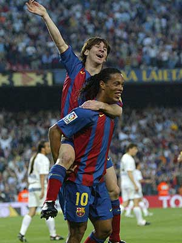

4. El primer gol oficial de Messi
El 1 de mayo de 2005, Messi marcó su primer gol oficial con el primer equipo del FC Barcelona frente al Albacete. Fue un tanto simbólico, tras una asistencia de Ronaldinho, que lo consagró como una promesa real del fútbol mundial.
5. Mundial 2006: Primera Copa del Mundo

Lionel Messi debutó en una Copa del Mundo con tan solo 18 años durante el torneo de Alemania 2006. Su primer partido fue contra Serbia y Montenegro, donde ingresó desde el banco y en pocos minutos marcó un gol y asistió a Hernán Crespo, dejando una huella inmediata. Aunque Argentina fue eliminada en cuartos de final por Alemania en penales, ese Mundial significó el inicio de la carrera de Messi en torneos globales con la selección absoluta.
6. Hat-trick contra el Real Madrid en 2007
EN DESARROLLO.